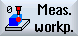

The part program to be processed has been created and you are in the editor.
|  | 1. | Press the "Meas. workpiece" softkey. | |
2. | Press the "3D" softkey. | ||
3. | Press the "Kinematics" softkey. The "Measure: Kinematic" input window opens. | ||
You can then open the following input windows via the following softkeys: | |||
1. Measurement | |||
2. Measurement | |||
3. Measurement | |||
Calculate | (see Calculate parameters) | ||